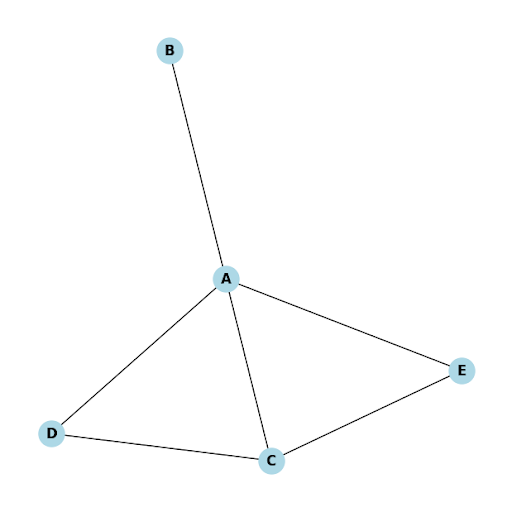
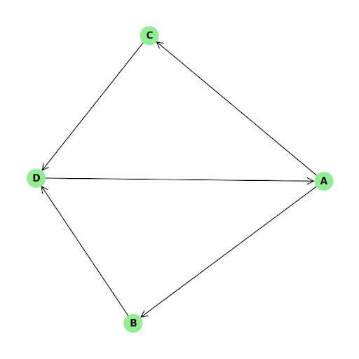
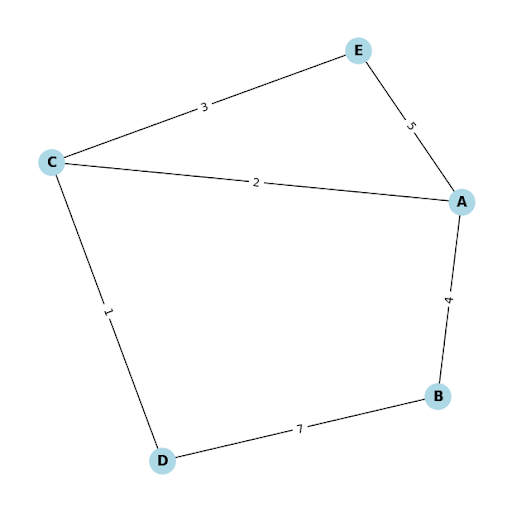
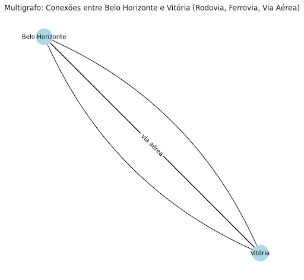
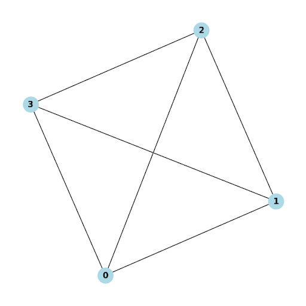

1. INTRODUÇÃO A GRAFOS#
Introdução#
A análise de redes espaciais é uma área de estudo que tem como objetivo investigar a organização e a conectividade de elementos espaciais, seja no contexto de infraestruturas urbanas, distribuição de recursos naturais ou fluxos de informação. A modelagem de relações espaciais por meio de grafos constitui uma abordagem útil para descrever e analisar a complexidade das interações geográficas.
Os grafos são estruturas matemáticas fundamentais na representação e análise de relações e conexões em diversas áreas do conhecimento. A ideia central de um grafo consiste em um conjunto de nós (ou vértices) conectados por arestas (ou ligações), que podem representar diversas situações reais, como redes de transportes, redes elétricas, redes sociais e, especialmente, redes espaciais. Neste capítulo, vamos explorar os conceitos básicos de grafos e mostrar como eles podem ser aplicados à análise espacial de redes, utilizando o Python e a biblioteca NetworkX.
O capítulo é organizado para introduzir, de forma progressiva, os conceitos fundamentais de grafos, incluindo vértices, arestas, graus, componentes conectados e o papel de diferentes tipos de grafos, como grafos direcionados e não direcionados. Você também aprenderá como construir grafos simples e representativos utilizando a biblioteca NetworkX, explorando suas principais funções e como elas podem ser utilizadas para responder a perguntas específicas sobre redes espaciais.
1.1 Fundamentos sobre Grafos#
Um grafo é uma estrutura composta por um conjunto de vértices (ou nós) e um conjunto de arestas (ou ligações) que conectam esses vértices. Formalmente, um grafo G é definido como G = (V, E), onde V é o conjunto de vértices e E é o conjunto de arestas que conectam pares de vértices. As arestas podem representar relações de diversos tipos, como conexões físicas, caminhos ou qualquer tipo de vínculo entre os elementos representados pelos nós.
Grafos são amplamente utilizados em diversas áreas do conhecimento, pois permitem modelar relações e interações de forma intuitiva e visual. Na ciência da computação, são usados para representar redes de computadores, estrutura de dados e algoritmos. Na engenharia, grafos são utilizados para modelar redes de transporte e distribuição, como redes elétricas, sistemas de água e esgoto, e redes de tráfego. Nas ciências sociais, são usados para analisar redes de amizade e interações sociais. Em geografia e análise espacial, grafos ajudam a representar redes espaciais, como estradas, rios e sistemas urbanos.
Existem diferentes tipos de grafos, cada um com suas características e aplicações específicas:
Grafos não direcionados: Neste tipo de grafo, as arestas não possuem uma direção específica, ou seja, a relação entre os nós é bidirecional. Um exemplo típico de grafo não direcionado é uma rede de estradas, onde é possível trafegar em ambos os sentidos entre duas cidades conectadas.

Grafos direcionados (ou dígrafos): Nos grafos direcionados, as arestas possuem uma direção, representando uma relação unidirecional entre os nós. Um exemplo comum é a representação de rotas de voo, onde uma aresta conecta duas cidades, mas apenas em uma direção específica.

Grafos ponderados: Nos grafos ponderados, cada aresta tem um valor associado, chamado de peso, que pode representar a distância, o custo ou qualquer outra medida relevante. Por exemplo, em uma rede de transporte, o peso da aresta pode representar a distância entre duas localidades ou o tempo necessário para percorrê-la.

Grafos não ponderados: Neste caso, as arestas não possuem pesos associados, ou seja, todas as conexões são consideradas equivalentes.
Grafos simples e multigrafos: Um grafo simples é aquele em que existe, no máximo, uma aresta entre dois nós, e não há laços (arestas que conectam um nó a ele mesmo). Já um multigrafo permite múltiplas arestas entre os mesmos nós, podendo representar, por exemplo, diferentes rotas entre duas cidades.

Grafos completos: Um grafo completo é aquele em que todos os nós estão conectados a todos os outros nós. Esses grafos são úteis para estudar cenários em que cada elemento se relaciona diretamente com todos os demais.

Esses diferentes tipos de grafos permitem modelar uma ampla variedade de problemas e situações.
1.2 A biblioteca NetworkX do Python#
O Python é amplamente utilizado para a análise espacial de redes. Uma das principais razões é a possibilidade de automatização e reprodutibilidade, já que Python permite a criação de scripts que processam dados de forma consistente, ideal para análises repetidas ou pipelines automatizados. Além disso, o Python oferece controle total sobre o processo analítico, o que proporciona flexibilidade na customização de algoritmos e ajustes que muitas vezes não são possíveis em ferramentas SIG Desktop.
Outro diferencial importante do Python é a ampla gama de bibliotecas disponíveis, como NetworkX, OSMnx e GeoPandas, que permitem manipular grafos e dados geoespaciais com grande flexibilidade. A escalabilidade também é uma vantagem significativa, pois Python pode lidar com grandes volumes de dados e permitir o uso de técnicas de programação paralela, algo que um SIG Desktop, com sua interface gráfica, pode enfrentar limitações.
Python se destaca ainda pela sua capacidade de integração com outras ferramentas e fluxos de trabalho, como bibliotecas de aprendizado de máquina (scikit-learn) e visualização de dados (matplotlib), oferecendo uma solução mais robusta e completa para análises complexas. Além disso, a customização e flexibilidade que Python proporciona são incomparáveis, permitindo a adaptação do código a necessidades muito específicas. Por fim, a possibilidade de executar Python em ambientes não gráficos torna-o ideal para pipelines automatizados e execuções em servidores ou na nuvem. Esses fatores fazem com que Python seja uma escolha vantajosa quando há necessidade de personalização, automação, escalabilidade e controle total sobre o processo analítico, enquanto um SIG Desktop pode ser mais limitado nessas questões.
No ecossistema do Python, o NetworkX é uma biblioteca em Python voltada para a criação, manipulação e análise de grafos e redes complexas. Ele oferece ferramentas eficientes para modelar e estudar redes em diversas áreas, como redes sociais, infraestrutura urbana, sistemas biológicos e redes de transporte. Entre seus principais recursos, destaca-se o suporte à criação de diferentes tipos de grafos, como grafos simples, dígrafos (grafos direcionados) e multigrafos (com múltiplas arestas entre dois nós), permitindo que nós e arestas possuam atributos associados, como rótulos, pesos ou distâncias.
A biblioteca também possibilita a adição, remoção e modificação de nós e arestas, além de permitir consultas sobre a estrutura do grafo, como vizinhança e grau de conexão. O NetworkX oferece uma gama de algoritmos para a análise de redes, incluindo caminhos mínimos, medidas de centralidade, detecção de componentes conexos e identificação de comunidades. Adicionalmente, permite a importação e exportação de grafos em formatos comuns, como GraphML, GML e Edgelist, facilitando a integração com outras ferramentas. Embora a visualização de grafos não seja seu foco principal, a biblioteca inclui funcionalidades básicas de visualização compatíveis com o Matplotlib. O NetworkX é amplamente utilizado tanto em pesquisas acadêmicas quanto em projetos práticos, sendo uma ferramenta flexível e poderosa para a análise de redes e grafos.
Ao longo deste capítulo, vamos explorar como criar e manipular esses diferentes tipos de grafos, utilizando a biblioteca NetworkX, para que você possa compreender suas características e como aplicá-los na análise espacial de redes.
Vamos fazer três exercícios práticos que permitirão aplicar os conceitos discutidos anteriormente. O primeiro exercício será a criação de um grafo simples; o segundo, de um digrafo; e, finalmente, no terceiro exercício, trabalharemos com um multigrafo. Esses exemplos práticos ajudarão a solidificar sua compreensão sobre os diferentes tipos de grafos e suas aplicações na análise espacial de redes, utilizando a biblioteca NetworkX.
1.3 Criando e Manipulando um Grafo Simples#
Neste exercício, você aprenderá a criar um grafo não direcionado no Python utilizando a biblioteca networkx. O foco será a criação de um grafo que represente algumas capitais do Brasil e suas conexões, explorando ferramentas básicas de networkx ao longo do processo. Além disso, será abordada a inclusão de atributos como a população das capitais e a manipulação de nós e arestas. No final, o grafo será visualizado, com ênfase nas conexões e nos atributos associados a nós e arestas.
Inicialmente, vamos importar as bibliotecas necessárias para criar e visualizar o grafo. Utilizaremos a biblioteca networkx para manipulação de grafos e matplotlib para visualização.
import networkx as nx
import matplotlib.pyplot as plt
Agora, vamos criar um grafo vazio e adicionar alguns atributos globais, como a data de criação, o nome do projeto e a versão. Esses atributos são úteis para registrar informações sobre o grafo, ajudando a documentar quando e para que finalidade ele foi criado.
# Criando um grafo vazio
G = nx.Graph()
# Adicionando atributos globais ao grafo, como data de criação, nome do projeto e versão
G.graph['data_criacao'] = '2024-01-02' # Data de criação do grafo
G.graph['projeto'] = 'Análise de Capitais Brasileiras' # Nome do projeto
G.graph['versao'] = '1.0' # Versão do grafo
# Exibindo os atributos globais do grafo
print("Atributos do grafo G:")
print(G.graph) # Imprime o dicionário contendo os atributos globais do grafo
Atributos do grafo G:
{'data_criacao': '2024-01-02', 'projeto': 'Análise de Capitais Brasileiras', 'versao': '1.0'}
Neste código, estamos criando e configurando um grafo utilizando a biblioteca networkx.
Criação do grafo: A primeira linha cria um grafo vazio chamado
Gutilizando a classeGraphda bibliotecanetworkx. Esse grafo será usado para representar um conjunto de nós e conexões (arestas) entre eles.Atributos globais: Em seguida, estamos adicionando três atributos globais ao grafo:
data_criacao: Define a data de criação do grafo.projeto: Especifica o nome do projeto relacionado ao grafo.versao: Indica a versão atual do grafo.
Esses atributos são úteis para fornecer informações sobre o grafo como um todo, facilitando o acompanhamento e documentação do projeto.
Exibição dos atributos: Por fim, o código imprime os atributos globais do grafo como um dicionário, permitindo visualizar as informações adicionadas ao grafo.
Em seguida, vamos adicionar alguns nós ao grafo, representando as capitais da região sudeste do Brasil. Aqui, estamos apenas incluindo os nós correspondentes às cidades, sem ainda definir conexões entre elas.
G.add_node('São Paulo')
G.add_node('Rio de Janeiro')
G.add_node('Belo Horizonte')
G.add_node('Vitória')
O comando G.add_node('São Paulo') adiciona um nó ao grafo G com o rótulo ‘São Paulo’. Neste contexto, ‘São Paulo’ representa uma cidade, que será tratada como um vértice no grafo.
Agora que já temos os nós no grafo, vamos visualizá-los. Nesta visualização inicial, exibiremos apenas os nós, sem as conexões (arestas) entre eles. Para isso, utilizamos um layout de disposição dos nós e exibimos suas posições no gráfico.
pos = nx.spring_layout(G, seed=42)
plt.figure(figsize=(8, 6))
nx.draw_networkx_nodes(G, pos, node_color='lightblue', node_size=3000)
nx.draw_networkx_labels(G, pos, font_size=10, font_weight='bold')
plt.title("Capitais do Sudeste (Apenas Nós)")
plt.show()
No código acima:
pos = nx.spring_layout(G, seed=42): Gera as posições dos nós do grafoGutilizando o layout de mola (spring layout), que distribui os nós de forma equilibrada no espaço, simulando forças físicas. O parâmetroseed=42garante que a disposição dos nós será sempre a mesma, facilitando a reprodução do gráfico.plt.figure(figsize=(8, 6)): Cria uma nova figura para o gráfico com um tamanho de 8x6 polegadas, especificando as dimensões da visualização.nx.draw_networkx_nodes(G, pos, node_color='lightblue', node_size=3000): Desenha os nós do grafoGutilizando as posições definidas empos. Os nós serão visualizados na cor azul-claro (lightblue) com um tamanho de 3000 unidades.nx.draw_networkx_labels(G, pos, font_size=10, font_weight='bold'): Adiciona rótulos aos nós com um tamanho de fonte de 10 e com estilo em negrito (font_weight='bold), permitindo identificar cada nó pelo seu nome.plt.title("Capitais do Sudeste (Apenas Nós)"): Define o título do gráfico como “Capitais do Sudeste (Apenas Nós)”, indicando que estamos visualizando apenas os nós (as capitais), sem suas conexões.plt.show(): Exibe o gráfico gerado na janela de visualização.
Agora, vamos adicionar o atributo de população a cada nó, representando o número de habitantes de cada capital. Isso permitirá que cada nó tenha uma informação adicional útil para análises futuras:
G.nodes['São Paulo']['populacao'] = 12396372
G.nodes['Rio de Janeiro']['populacao'] = 6747815
G.nodes['Belo Horizonte']['populacao'] = 2521564
G.nodes['Vitória']['populacao'] = 365855
No código acima, G.nodes['São Paulo']['populacao'] = 12396372 adiciona ou define um atributo chamado ‘populacao’ para o nó ‘São Paulo’ no grafo G, com o valor de 12.396.372 (representando a população da cidade).
Em seguida, vamos consultar o número de nós presentes no grafo, juntamente com seus atributos, para confirmar que os dados foram inseridos corretamente:
print("Nós no grafo G:")
print(G.nodes(data=True))
Nós no grafo G:
[('São Paulo', {'populacao': 12396372}), ('Rio de Janeiro', {'populacao': 6747815}), ('Belo Horizonte', {'populacao': 2521564}), ('Vitória', {'populacao': 365855})]
No código acima:
print(G.nodes(data=True)): Exibe todos os nós presentes no grafoG, juntamente com seus atributos. O parâmetrodata=Truefaz com que onetworkximprima os dados associados a cada nó (como atributos que foram adicionados, por exemplo, a população no caso de São Paulo). O resultado será uma lista de tuplas, onde cada tupla contém o nome do nó e um dicionário com os atributos e seus respectivos valores.
Agora, vamos atualizar a visualização dos nós, incluindo o número de habitantes (população) associado a cada capital. Dessa forma, a visualização será mais informativa:
labels = {n: f"{n}\nPop: {G.nodes[n]['populacao']}" for n in G.nodes()}
plt.figure(figsize=(8, 6))
nx.draw_networkx_nodes(G, pos, node_color='lightblue', node_size=3000)
nx.draw_networkx_labels(G, pos, labels, font_size=10, font_weight='bold')
plt.title("Capitais do Sudeste com População")
plt.show()
Para remover um nó do grafo, podemos utilizar a função remove_node(). Por exemplo, vamos remover o nó “Rio de Janeiro”:
G.remove_node('Rio de Janeiro')
Agora seu markdown está formatado corretamente com células de código executável identificadas para Jupyter Book.
Aqui está o markdown revisado com as células de código executável corretamente formatadas para o Jupyter Book:
Após a remoção do nó, vamos plotar o grafo novamente para verificar o resultado, observando a ausência de “Rio de Janeiro” no grafo:
pos = nx.spring_layout(G, seed=42)
plt.figure(figsize=(8, 6))
nx.draw(G, pos, with_labels=True, node_color='lightblue', node_size=3000, font_size=10, font_weight='bold')
plt.title("Capitais do Sudeste sem Rio de Janeiro")
plt.show()
Agora que vimos como a função remove_node() funciona, vamos inserir novamente o nó referente ao Rio de Janeiro no grafo, adicionando também o atributo de população, com a função add_node():
# Adicionando o nó referente ao Rio de Janeiro
G.add_node('Rio de Janeiro', populacao=6747815)
Em seguida, vamos plotar novamente o grafo para verificar a inclusão do nó Rio de Janeiro:
pos = nx.spring_layout(G, seed=42)
plt.figure(figsize=(8, 6))
nx.draw(G, pos, with_labels=True, node_color='lightblue', node_size=3000, font_size=10, font_weight='bold')
plt.title("Capitais do Sudeste com a Inclusão do Rio de Janeiro")
plt.show()
Agora, vamos adicionar as arestas que conectam as capitais entre si, usando a função add_edge(). Cada aresta representa uma conexão entre duas cidades:
G.add_edge('São Paulo', 'Rio de Janeiro')
G.add_edge('São Paulo', 'Belo Horizonte')
G.add_edge('Rio de Janeiro', 'Belo Horizonte')
G.add_edge('Rio de Janeiro', 'Vitória')
G.add_edge('Belo Horizonte', 'Vitória')
No código acima, G.add_edge('São Paulo', 'Rio de Janeiro') adiciona uma aresta (conexão) entre os nós ‘São Paulo’ e ‘Rio de Janeiro’ no grafo G. Se os nós ainda não existirem no grafo, eles serão automaticamente criados antes de estabelecer a conexão.
Com as conexões estabelecidas, podemos visualizar o grafo completo, mostrando não só os nós, mas também as conexões entre as capitais:
plt.figure(figsize=(8, 6))
nx.draw(G, pos, with_labels=True, node_color='lightblue', node_size=3000, font_size=10, font_weight='bold')
plt.title("Capitais do Sudeste e Conexões")
plt.show()
Agora, vamos contar quantas arestas existem no grafo, ou seja, quantas conexões foram feitas entre as capitais. Para tanto, usamos a função number_of_edges():
numero_arestas_G = G.number_of_edges()
print(f"Número de arestas no grafo G: {numero_arestas_G}")
Número de arestas no grafo G: 5
Em seguida, vamos adicionar o atributo distancia a cada aresta, representando a distância aproximada entre as capitais conectadas. Isso nos permitirá ter informações mais detalhadas sobre as conexões:
G.edges['São Paulo', 'Rio de Janeiro']['distancia'] = 430
G.edges['São Paulo', 'Belo Horizonte']['distancia'] = 590
G.edges['Rio de Janeiro', 'Belo Horizonte']['distancia'] = 440
G.edges['Rio de Janeiro', 'Vitória']['distancia'] = 520
G.edges['Belo Horizonte', 'Vitória']['distancia'] = 530
G.edges['São Paulo', 'Rio de Janeiro']['distancia'] = 430: este comando adiciona ou define um atributo chamado ‘distancia’ para a aresta que conecta os nós ‘São Paulo’ e ‘Rio de Janeiro’ no grafo G.
Agora, podemos exibir todas as arestas e seus atributos, como as distâncias entre as capitais, para garantir que os dados foram inseridos corretamente:
print("Arestas no grafo G com atributos:")
print(G.edges(data=True))
Arestas no grafo G com atributos:
[('São Paulo', 'Rio de Janeiro', {'distancia': 430}), ('São Paulo', 'Belo Horizonte', {'distancia': 590}), ('Belo Horizonte', 'Rio de Janeiro', {'distancia': 440}), ('Belo Horizonte', 'Vitória', {'distancia': 530}), ('Vitória', 'Rio de Janeiro', {'distancia': 520})]
print(G.edges(data=True)): este comando exibe todas as arestas presentes no grafo G, juntamente com seus atributos. O parâmetro data=True faz com que o networkx imprima os dados associados a cada aresta (como atributos que foram adicionados, por exemplo, a distância entre São Paulo e Rio de Janeiro). O resultado será uma lista de tuplas, onde cada tupla contém os dois nós conectados pela aresta e um dicionário com os atributos e seus respectivos valores.
Com isso, conseguimos visualizar as conexões entre as capitais, juntamente com os atributos associados a cada aresta, como a distância. Isso nos dá uma base sólida para realizar futuras análises no grafo.
Agora, vamos visualizar novamente o grafo, desta vez incluindo as distâncias nas arestas que conectam as capitais:
pos = nx.spring_layout(G, seed=42)
plt.figure(figsize=(8, 6))
nx.draw(G, pos, with_labels=True, node_color='lightblue', node_size=3000, font_size=10, font_weight='bold')
# Obter as distâncias como rótulos das arestas
edge_labels = nx.get_edge_attributes(G, 'distancia')
nx.draw_networkx_edge_labels(G, pos, edge_labels=edge_labels)
plt.title("Capitais do Sudeste com Distâncias nas Arestas")
plt.show()
Em seguida, vamos acessar uma aresta específica, neste caso, a conexão entre São Paulo e Belo Horizonte, para verificar a distância entre as duas capitais:
distancia_sp_bh = G.edges['São Paulo', 'Belo Horizonte']['distancia']
print(f"Distância entre São Paulo e Belo Horizonte: {distancia_sp_bh} km")
Distância entre São Paulo e Belo Horizonte: 590 km
Se quisermos imprimir todas as arestas do grafo com suas respectivas distâncias, podemos percorrer todas as arestas e exibir suas informações:
for edge in G.edges(data=True):
print(f"Aresta: {edge[0]} - {edge[1]}, Distância: {edge[2]['distancia']} km")
Aresta: São Paulo - Rio de Janeiro, Distância: 430 km
Aresta: São Paulo - Belo Horizonte, Distância: 590 km
Aresta: Belo Horizonte - Rio de Janeiro, Distância: 440 km
Aresta: Belo Horizonte - Vitória, Distância: 530 km
Aresta: Vitória - Rio de Janeiro, Distância: 520 km
Agora, vamos remover uma aresta do grafo, especificamente a conexão entre Belo Horizonte e Vitória:
G.remove_edge('Belo Horizonte', 'Vitória')
Em seguida, vamos plotar o grafo novamente para verificar a remoção da conexão entre essas duas capitais:
pos = nx.spring_layout(G, seed=42)
plt.figure(figsize=(8, 6))
nx.draw(G, pos, with_labels=True, node_color='lightblue', node_size=3000, font_size=10, font_weight='bold')
edge_labels = nx.get_edge_attributes(G, 'distancia')
nx.draw_networkx_edge_labels(G, pos, edge_labels=edge_labels)
plt.title("Capitais do Sudeste com Distâncias nas Arestas (Após Remoção)")
plt.show()
Agora que vimos como a função remove_edge() funciona, podemos adicionar novamente a aresta removida, restabelecendo a conexão entre Belo Horizonte e Vitória:
G.add_edge('Belo Horizonte', 'Vitória', distancia=530)
Vamos plotar o grafo novamente para confirmar a inclusão dessa aresta:
pos = nx.spring_layout(G, seed=42)
plt.figure(figsize=(8, 6))
nx.draw(G, pos, with_labels=True, node_color='lightblue', node_size=3000, font_size=10, font_weight='bold')
edge_labels = nx.get_edge_attributes(G, 'distancia')
nx.draw_networkx_edge_labels(G, pos, edge_labels=edge_labels)
plt.title("Capitais do Sudeste com Distâncias nas Arestas (Atualizado)")
plt.show()
Vamos adicionar a cidade de Curitiba ao grafo, junto com a informação da população:
G.add_node('Curitiba', populacao=1963726)
Por fim, vamos plotar o grafo mais uma vez para incluir Curitiba entre as capitais existentes:
pos = nx.spring_layout(G, seed=42)
plt.figure(figsize=(8, 6))
nx.draw(G, pos, with_labels=True, node_color='lightblue', node_size=3000, font_size=10, font_weight='bold')
# Exibir as distâncias das arestas já existentes
edge_labels = nx.get_edge_attributes(G, 'distancia')
nx.draw_networkx_edge_labels(G, pos, edge_labels=edge_labels)
plt.title("Capitais do Sudeste com Curitiba")
plt.show()
Com essas operações, você poderá visualizar o grafo atualizado, incluindo a cidade de Curitiba e suas conexões, além de garantir que as distâncias entre as capitais sejam claramente exibidas.
Vamos começar conectando Curitiba a São Paulo, adicionando uma aresta que representa a distância entre essas duas capitais:
G.add_edge('Curitiba', 'São Paulo', distancia=408)
Em seguida, vamos plotar novamente o grafo para visualizar essa nova conexão:
pos = nx.spring_layout(G, seed=42)
plt.figure(figsize=(8, 6))
nx.draw(G, pos, with_labels=True, node_color='lightblue', node_size=3000, font_size=10, font_weight='bold')
edge_labels = nx.get_edge_attributes(G, 'distancia')
nx.draw_networkx_edge_labels(G, pos, edge_labels=edge_labels)
plt.title("Capitais com Distâncias nas Arestas (Incluindo Curitiba - São Paulo)")
plt.show()
Agora, vamos calcular o grau de cada nó, que indica o número de conexões (arestas) que cada cidade tem. Esse cálculo nos ajuda a entender a centralidade de cada capital no grafo:
print("Grau de todos os nós (número de conexões):")
print(dict(G.degree))
Grau de todos os nós (número de conexões):
{'São Paulo': 3, 'Belo Horizonte': 3, 'Vitória': 2, 'Rio de Janeiro': 3, 'Curitiba': 1}
Após visualizar o grau de todos os nós, vamos realizar uma verificação específica para São Paulo, consultando quais cidades estão diretamente conectadas a ela (nós adjacentes):
print(f"Grau de São Paulo: {G.degree['São Paulo']}")
adjacencias_sao_paulo = G.adj['São Paulo']
print("Nós adjacentes a São Paulo:", list(adjacencias_sao_paulo))
Grau de São Paulo: 3
Nós adjacentes a São Paulo: ['Rio de Janeiro', 'Belo Horizonte', 'Curitiba']
No código acima:
G.degree['São Paulo']retorna o grau do nó ‘São Paulo’, ou seja, o número de conexões (arestas) que São Paulo tem com outros nós no grafoG.O
f-stringé utilizado para formatar a mensagem e exibir o grau de São Paulo.G.adj['São Paulo']retorna os nós adjacentes a São Paulo, ou seja, as cidades que estão diretamente conectadas a ela por uma aresta.O
list(adjacencias_sao_paulo)converte o conjunto de nós adjacentes em uma lista, que é então impressa.
Da mesma maneira, podemos verificar as cidades que estão diretamente conectadas a Curitiba:
print(f"Grau de Curitiba: {G.degree['Curitiba']}")
adjacencias_curitiba = G.adj['Curitiba']
print("Nós adjacentes a Curitiba:", list(adjacencias_curitiba))
Grau de Curitiba: 1
Nós adjacentes a Curitiba: ['São Paulo']
Finalmente, para obter uma visão completa de todas as conexões no grafo, vamos gerar um relatório de adjacências usando o método adj. Esse relatório mostrará todas as conexões de cada cidade no grafo:
print("Relatório de adjacências de todo o grafo G:")
print(G.adj)
Relatório de adjacências de todo o grafo G:
{'São Paulo': {'Rio de Janeiro': {'distancia': 430}, 'Belo Horizonte': {'distancia': 590}, 'Curitiba': {'distancia': 408}}, 'Belo Horizonte': {'São Paulo': {'distancia': 590}, 'Rio de Janeiro': {'distancia': 440}, 'Vitória': {'distancia': 530}}, 'Vitória': {'Rio de Janeiro': {'distancia': 520}, 'Belo Horizonte': {'distancia': 530}}, 'Rio de Janeiro': {'São Paulo': {'distancia': 430}, 'Belo Horizonte': {'distancia': 440}, 'Vitória': {'distancia': 520}}, 'Curitiba': {'São Paulo': {'distancia': 408}}}
1.4 Criando um Digrafo de Viagens entre Capitais Brasileiras#
Neste exercício, vamos explorar a criação e manipulação de um digrafo (grafo direcionado) utilizando o Python e a biblioteca networkx. O digrafo será utilizado para representar rotas de viagem entre capitais brasileiras, começando em Curitiba e finalizando em Vitória, passando por outras capitais. Além disso, será inserida uma ramificação que conectará São Paulo a Belo Horizonte. Cada aresta no digrafo representará uma viagem direcionada entre as capitais, e as distâncias entre essas cidades serão adicionadas como atributos das arestas.
O principal objetivo é entender os conceitos de grafos direcionados e suas aplicações práticas, por meio de um exemplo concreto de viagens entre cidades. Durante o exercício, vamos trabalhar com diferentes características dos digrafos, como conexões direcionadas, graus de entrada e saída, além de sucessores e antecessores de cada nó.
Estrutura do Exercício:#
Nós e Arestas: Começaremos criando os nós, que representarão as capitais, e as arestas direcionadas, que representarão as viagens entre elas. A cada aresta, será atribuído um valor de distância, simulando a distância real entre as cidades.
Adjacências e Conexões: Exploraremos como verificar as conexões diretas entre os nós. Isso nos permitirá identificar, por exemplo, quais cidades estão diretamente conectadas a outras e em que direção ocorre essa conexão.
Graus: Vamos calcular o grau de entrada e o grau de saída de cada nó. O grau de entrada indica quantas cidades fazem uma viagem para essa capital, enquanto o grau de saída indica para quantas cidades essa capital faz viagens. Essa análise é importante para entender o papel de cada cidade dentro da rede de viagens.
Sucessores e Antecessores: Analisaremos os sucessores (as cidades para as quais uma capital faz viagens) e os antecessores (as cidades que fazem viagens para uma capital), ajudando a entender a dinâmica de entrada e saída de cada capital na rede.
Primeiro, vamos criar o nosso digrafo. Um digrafo é um grafo onde as arestas têm uma direção, representando uma viagem de uma cidade para outra.
# Criando um digrafo (grafo direcionado)
D_viagem = nx.DiGraph()
No primeiro exercício, utilizamos a classe nx.Graph() para criar um grafo não direcionado, no qual as arestas (conexões) entre os nós não possuem direção específica. Ou seja, uma conexão entre dois nós é bidirecional, representando uma relação simétrica. Neste exercício, estamos usando nx.DiGraph(), que cria um grafo direcionado (ou digrafo). Nesse tipo de grafo, as arestas possuem direção, o que significa que a relação entre os nós é assimétrica.
Agora, vamos adicionar os nós, que são as capitais envolvidas na nossa viagem, usando o método add_node():
# Adicionando os nós (capitais)
D_viagem.add_node('Curitiba')
D_viagem.add_node('São Paulo')
D_viagem.add_node('Rio de Janeiro')
D_viagem.add_node('Belo Horizonte')
D_viagem.add_node('Vitória')
Vamos visualizar os nós do grafo antes de adicionar as conexões (arestas). Isso nos dará uma ideia de como as capitais estão dispostas inicialmente.
# Plotando os nós (capitais) sem as arestas
plt.figure(figsize=(10, 8))
# Usando um layout para posicionar os nós
pos = nx.spring_layout(D_viagem, seed=42)
# Desenhando apenas os nós
nx.draw_networkx_nodes(D_viagem, pos, node_color='lightblue', node_size=800)
# Desenhando os rótulos (capitais)
nx.draw_networkx_labels(D_viagem, pos, font_size=9, font_weight='bold')
# Exibindo o gráfico
plt.title("Capitais (Curitiba, São Paulo, Rio de Janeiro, Belo Horizonte, Vitória)")
plt.show()
Agora, vamos adicionar as arestas direcionadas que representam as viagens de uma capital para outra, junto com as distâncias entre elas.
# Adicionando as arestas direcionadas (viagem de Curitiba até Vitória)
D_viagem.add_edge('Curitiba', 'São Paulo', distancia=408) # Curitiba -> São Paulo
D_viagem.add_edge('São Paulo', 'Rio de Janeiro', distancia=429) # São Paulo -> Rio de Janeiro
D_viagem.add_edge('Rio de Janeiro', 'Vitória', distancia=521) # Rio de Janeiro -> Vitória
No código acima, o comando D_viagem.add_edge('Curitiba', 'São Paulo', distancia=408) adiciona uma aresta direcionada ao digrafo D_viagem, representando uma viagem de Curitiba para São Paulo. A direção da aresta indica que a conexão é unidirecional, ou seja, de Curitiba para São Paulo. Além disso, um atributo adicional ‘distancia’ é atribuído à aresta com o valor de 408, que pode representar a distância entre as duas capitais em quilômetros.
Vamos visualizar o grafo novamente, agora com as arestas que representam as viagens entre as capitais e as distâncias entre elas.
# Plotando os nós e arestas
plt.figure(figsize=(10, 8))
# Usando um layout para organizar a posição dos nós
pos = nx.spring_layout(D_viagem, seed=42)
# Desenhando os nós
nx.draw_networkx_nodes(D_viagem, pos, node_color='lightblue', node_size=800)
# Desenhando as arestas direcionadas com setas
nx.draw_networkx_edges(D_viagem, pos, edge_color='gray', width=2, arrows=True, arrowsize=20)
# Desenhando os rótulos (capitais)
nx.draw_networkx_labels(D_viagem, pos, font_size=9, font_weight='bold')
# Adicionando rótulos de distâncias nas arestas
edge_labels = nx.get_edge_attributes(D_viagem, 'distancia')
nx.draw_networkx_edge_labels(D_viagem, pos, edge_labels=edge_labels)
# Exibindo o gráfico
plt.title("Viagem de Curitiba para Vitória (Arestas Direcionadas)")
plt.show()
Agora, vamos adicionar uma ramificação na rota, de São Paulo para Belo Horizonte, conectando também Belo Horizonte a Vitória.
# Adicionando a ramificação em São Paulo para Belo Horizonte
D_viagem.add_edge('São Paulo', 'Belo Horizonte', distancia=586) # São Paulo -> Belo Horizonte
D_viagem.add_edge('Belo Horizonte', 'Vitória', distancia=524) # Belo Horizonte -> Vitória
Vamos visualizar o grafo completo, agora com a ramificação de São Paulo para Belo Horizonte e as distâncias nas novas arestas.
# Plotando os nós e arestas
plt.figure(figsize=(10, 8))
pos = nx.spring_layout(D_viagem, seed=42)
nx.draw_networkx_nodes(D_viagem, pos, node_color='lightblue', node_size=800)
nx.draw_networkx_edges(D_viagem, pos, edge_color='gray', width=2, arrows=True, arrowsize=20)
nx.draw_networkx_labels(D_viagem, pos, font_size=9, font_weight='bold')
edge_labels = nx.get_edge_attributes(D_viagem, 'distancia')
nx.draw_networkx_edge_labels(D_viagem, pos, edge_labels=edge_labels)
plt.title("Viagem de Curitiba para Vitória com Ramificação para Belo Horizonte (Arestas Direcionadas)")
plt.show()
Vamos começar exibindo todos os nós do grafo para garantir que todos foram adicionados corretamente.
# Verificar os nós do grafo
print("Nós no grafo:", list(D_viagem.nodes))
Nós no grafo: ['Curitiba', 'São Paulo', 'Rio de Janeiro', 'Belo Horizonte', 'Vitória']
O comando print("Nós no grafo:", list(D_viagem.nodes)) exibe todos os nós presentes no digrafo D_viagem. A função D_viagem.nodes retorna uma visão geral dos nós, e o uso de list() converte essa visão em uma lista para facilitar a leitura. Essa instrução imprime todos os nós, ou seja, todas as capitais que foram adicionadas ao grafo.
Depois de listar os nós, verifique as arestas do grafo e os atributos associados.
# Verificar as arestas do grafo
print("Arestas no grafo:", list(D_viagem.edges(data=True)))
Arestas no grafo: [('Curitiba', 'São Paulo', {'distancia': 408}), ('São Paulo', 'Rio de Janeiro', {'distancia': 429}), ('São Paulo', 'Belo Horizonte', {'distancia': 586}), ('Rio de Janeiro', 'Vitória', {'distancia': 521}), ('Belo Horizonte', 'Vitória', {'distancia': 524})]
No código acima, o comando print("Arestas no grafo:", list(D_viagem.edges(data=True))) exibe todas as arestas presentes no digrafo D_viagem, juntamente com seus atributos. A função D_viagem.edges(data=True) retorna uma visão das arestas, incluindo os dados associados a elas (como a distância). O uso de list() converte essa visão em uma lista, facilitando a leitura e permitindo visualizar tanto as conexões entre os nós quanto os atributos de cada aresta.
Agora vamos revisar as arestas do digrafo para garantir que todas as distâncias e demais atributos foram adicionados corretamente.
# Exibir todas as arestas e seus atributos
print("Arestas no digrafo com atributos:")
print(D_viagem.edges(data=True))
Arestas no digrafo com atributos:
[('Curitiba', 'São Paulo', {'distancia': 408}), ('São Paulo', 'Rio de Janeiro', {'distancia': 429}), ('São Paulo', 'Belo Horizonte', {'distancia': 586}), ('Rio de Janeiro', 'Vitória', {'distancia': 521}), ('Belo Horizonte', 'Vitória', {'distancia': 524})]
O código D_viagem.edges(data=True) retorna todas as arestas presentes no digrafo D_viagem, juntamente com os atributos associados a cada aresta. O parâmetro data=True indica que, além de exibir os nós conectados pelas arestas, ele também deve exibir os dados (ou atributos) armazenados nessas conexões, como distância ou outros valores.
Agora que já visualizamos os nós e arestas, vamos verificar as adjacências de cada nó para entender como eles estão conectados entre si.
# Verificar as adjacências
print("Adjacências de cada nó:")
for node in D_viagem.nodes:
print(f"{node}: {list(D_viagem.adj[node])}")
Adjacências de cada nó:
Curitiba: ['São Paulo']
São Paulo: ['Rio de Janeiro', 'Belo Horizonte']
Rio de Janeiro: ['Vitória']
Belo Horizonte: ['Vitória']
Vitória: []
O código percorre todos os nós do digrafo D_viagem e exibe as adjacências de cada nó, ou seja, os nós aos quais cada cidade (nó) está conectada diretamente.
D_viagem.adj[node]: O atributoadjretorna os nós adjacentes ao nó atual.list(D_viagem.adj[node]): Converte a lista de nós adjacentes em uma lista comum.print(f"{node}: {list(D_viagem.adj[node])}"): Exibe o nó atual e seus nós adjacentes. Of-stringé usado para formatar a saída.
Vamos exibir as adjacências específicas do nó São Paulo para detalhar melhor suas conexões diretas com outras capitais.
# Exibir as adjacências de São Paulo
print("Adjacências de São Paulo:", list(D_viagem.adj['São Paulo']))
Adjacências de São Paulo: ['Rio de Janeiro', 'Belo Horizonte']
Este código lista todos os nós (capitais) que estão diretamente conectados a São Paulo no digrafo, mostrando as cidades para as quais São Paulo possui uma conexão direcionada.
Em seguida, calcule o grau total de cada nó (quantidade de conexões), sem distinguir entre entrada e saída.
# Verificar o grau de cada nó
print("Grau dos nós (número de conexões):", dict(D_viagem.degree))
Grau dos nós (número de conexões): {'Curitiba': 1, 'São Paulo': 3, 'Rio de Janeiro': 2, 'Belo Horizonte': 2, 'Vitória': 2}
D_viagem.degree: Retorna o grau de cada nó no digrafo D_viagem, que representa o número de conexões associadas a cada nó.
dict(D_viagem.degree): Converte o resultado em um dicionário, onde cada chave é o nó (cidade) e o valor associado é o seu grau, ou seja, o número de conexões desse nó.
print: Exibe o dicionário resultante, mostrando o nome de cada nó e o número de conexões (arestas) que ele possui.
Após verificar o grau total, separe as conexões em graus de entrada e saída.
# Grau total dos nós
print("Grau total dos nós:", dict(D_viagem.degree))
# Grau de saída dos nós
print("Grau de saída dos nós:", dict(D_viagem.out_degree))
# Grau de entrada dos nós
print("Grau de entrada dos nós:", dict(D_viagem.in_degree))
Grau total dos nós: {'Curitiba': 1, 'São Paulo': 3, 'Rio de Janeiro': 2, 'Belo Horizonte': 2, 'Vitória': 2}
Grau de saída dos nós: {'Curitiba': 1, 'São Paulo': 2, 'Rio de Janeiro': 1, 'Belo Horizonte': 1, 'Vitória': 0}
Grau de entrada dos nós: {'Curitiba': 0, 'São Paulo': 1, 'Rio de Janeiro': 1, 'Belo Horizonte': 1, 'Vitória': 2}
Esse código examina três tipos de graus associados aos nós em um digrafo: o grau total, o grau de saída e o grau de entrada.
D_viagem.degree: Retorna o grau total de cada nó.D_viagem.out_degree: Retorna o grau de saída de cada nó, ou seja, quantas conexões o nó faz para outros nós.D_viagem.in_degree: Retorna o grau de entrada de cada nó, representando o número de arestas que entram no nó.
Os resultados mostram como cada capital se comporta em termos de conexões dentro do digrafo, com São Paulo sendo um nó mais central (com um grau total de 3), enquanto Vitória é um nó de destino final, recebendo duas conexões, mas sem emitir nenhuma.
Agora seu markdown está formatado corretamente para uso no Jupyter Book, com todas as células de código adequadamente indicadas.
Vamos analisar os sucessores (os nós para os quais uma determinada capital faz conexões) e os antecessores (os nós que se conectam a essa capital) para cada cidade no nosso digrafo. Começaremos pela cidade de Curitiba.
# Sucessores e antecessores de Curitiba
sucessores_curitiba = list(D_viagem.successors('Curitiba'))
antecessores_curitiba = list(D_viagem.predecessors('Curitiba'))
print(f"Sucessores de Curitiba: {sucessores_curitiba}")
print(f"Antecessores de Curitiba: {antecessores_curitiba}")
Sucessores de Curitiba: ['São Paulo']
Antecessores de Curitiba: []
Agora, verificamos os sucessores e antecessores de São Paulo.
# Sucessores e antecessores de São Paulo
sucessores_sao_paulo = list(D_viagem.successors('São Paulo'))
antecessores_sao_paulo = list(D_viagem.predecessors('São Paulo'))
print(f"Sucessores de São Paulo: {sucessores_sao_paulo}")
print(f"Antecessores de São Paulo: {antecessores_sao_paulo}")
Sucessores de São Paulo: ['Rio de Janeiro', 'Belo Horizonte']
Antecessores de São Paulo: ['Curitiba']
Aqui, analisamos os sucessores e antecessores do Rio de Janeiro.
# Sucessores e antecessores de Rio de Janeiro
sucessores_rio = list(D_viagem.successors('Rio de Janeiro'))
antecessores_rio = list(D_viagem.predecessors('Rio de Janeiro'))
print(f"Sucessores de Rio de Janeiro: {sucessores_rio}")
print(f"Antecessores de Rio de Janeiro: {antecessores_rio}")
Sucessores de Rio de Janeiro: ['Vitória']
Antecessores de Rio de Janeiro: ['São Paulo']
Agora, fazemos a análise dos sucessores e antecessores de Belo Horizonte.
# Sucessores e antecessores de Belo Horizonte
sucessores_bh = list(D_viagem.successors('Belo Horizonte'))
antecessores_bh = list(D_viagem.predecessors('Belo Horizonte'))
print(f"Sucessores de Belo Horizonte: {sucessores_bh}")
print(f"Antecessores de Belo Horizonte: {antecessores_bh}")
Sucessores de Belo Horizonte: ['Vitória']
Antecessores de Belo Horizonte: ['São Paulo']
Por fim, verificamos os sucessores e antecessores de Vitória.
# Sucessores e antecessores de Vitória
sucessores_vitoria = list(D_viagem.successors('Vitória'))
antecessores_vitoria = list(D_viagem.predecessors('Vitória'))
print(f"Sucessores de Vitória: {sucessores_vitoria}")
print(f"Antecessores de Vitória: {antecessores_vitoria}")
Sucessores de Vitória: []
Antecessores de Vitória: ['Rio de Janeiro', 'Belo Horizonte']
1.4.1 - Encontrando o Caminho Mais Curto no Digrafo#
Nesta etapa do exercício, você aprenderá a utilizar a função shortest_path da biblioteca networkx para encontrar o caminho mais curto entre dois nós em um digrafo, considerando o peso das arestas, que neste caso representa as distâncias entre as capitais. Aplicaremos essa função ao digrafo que criamos, identificando a rota mais curta entre Curitiba e Vitória. Além disso, vamos visualizar esse caminho diretamente no grafo, destacando-o para facilitar a interpretação.
Primeiramente, vamos calcular o caminho mais curto entre Curitiba e Vitória, usando as distâncias nas arestas como critério de peso.
# Encontrando o caminho mais curto de Curitiba até Vitória, baseado na distância
caminho_mais_curto = nx.shortest_path(D_viagem, source='Curitiba', target='Vitória', weight='distancia')
# Exibindo o caminho mais curto
print(f"Caminho mais curto de Curitiba até Vitória: {caminho_mais_curto}")
Caminho mais curto de Curitiba até Vitória: ['Curitiba', 'São Paulo', 'Rio de Janeiro', 'Vitória']
No código acima:
nx.shortest_path(): Esta é uma função da bibliotecanetworkxque encontra o caminho mais curto entre dois nós em um grafo.D_viagem: O digrafo representando as capitais brasileiras e as rotas entre elas.source='Curitiba': Especifica o nó de origem, Curitiba.target='Vitória': Indica o nó de destino, Vitória.weight='distancia': Define que o critério para o caminho mais curto será a distância entre as capitais.caminho_mais_curto: Armazena o resultado da função, que é o caminho mais curto entre Curitiba e Vitória levando em consideração as distâncias.
O resultado mostra o caminho mais curto de Curitiba até Vitória, considerando as distâncias entre as capitais no grafo direcionado:
Caminho mais curto de Curitiba até Vitória:
['Curitiba', 'São Paulo', 'Rio de Janeiro', 'Vitória']
Este caminho minimiza a soma das distâncias entre essas cidades.
Após determinar o caminho mais curto, vamos calcular a distância total percorrida. Utilizaremos a função shortest_path_length para calcular o comprimento total do caminho, considerando o mesmo peso (distância).
# Calculando o comprimento (distância total) do caminho mais curto
distancia_caminho_mais_curto = nx.shortest_path_length(D_viagem, source='Curitiba', target='Vitória', weight='distancia')
# Exibindo a distância total
print(f"Distância total do caminho mais curto de Curitiba até Vitória: {distancia_caminho_mais_curto} km")
Distância total do caminho mais curto de Curitiba até Vitória: 1358 km
Este código calcula a distância total do caminho mais curto encontrado entre Curitiba e Vitória, levando em consideração o peso das arestas (distância em quilômetros).
Agora que temos o caminho e a distância total, vamos visualizar esse caminho no grafo. Para isso, destacaremos as arestas que fazem parte do caminho mais curto, colorindo-as de uma cor diferente das outras.
# Plotando o grafo e destacando o caminho mais curto
plt.figure(figsize=(10, 8))
# Usando um layout para organizar a posição dos nós
pos = nx.spring_layout(D_viagem, seed=42)
# Desenhando todos os nós
nx.draw_networkx_nodes(D_viagem, pos, node_color='lightblue', node_size=800)
# Desenhando todas as arestas
nx.draw_networkx_edges(D_viagem, pos, edgelist=D_viagem.edges(), edge_color='gray', width=2)
# Destacando o caminho mais curto (arestas)
nx.draw_networkx_edges(D_viagem, pos, edgelist=list(zip(caminho_mais_curto, caminho_mais_curto[1:])),
edge_color='blue', width=3)
# Desenhando os rótulos (nomes das capitais)
nx.draw_networkx_labels(D_viagem, pos, font_size=9, font_weight='bold')
# Adicionando rótulos de distâncias nas arestas
edge_labels = nx.get_edge_attributes(D_viagem, 'distancia')
nx.draw_networkx_edge_labels(D_viagem, pos, edge_labels=edge_labels)
# Exibindo o gráfico
plt.title("Caminho Mais Curto de Curitiba até Vitória (Baseado na Distância)")
plt.show()
1.4.2 Calculando o Caminho com Menor Soma de Populações#
O objetivo desta parte do exercício é calcular o caminho que minimize a soma das populações ao longo do trajeto entre Curitiba e Vitória. Para isso, primeiro vamos adicionar o atributo “população” aos nós do digrafo, onde cada nó representa uma capital brasileira. Em seguida, utilizaremos uma função personalizada para realizar o cálculo e, por fim, visualizaremos esse caminho no grafo.
O primeiro passo é verificar se os nós do grafo (as capitais) já possuem o atributo população. Vamos percorrer todos os nós e imprimir os resultados.
# Verificando se todos os nós possuem o atributo 'populacao'
for no, dados in D_viagem.nodes(data=True):
if 'populacao' in dados:
print(f"O nó {no} tem a população: {dados['populacao']}")
else:
print(f"O nó {no} não tem o atributo 'populacao'")
O nó Curitiba não tem o atributo 'populacao'
O nó São Paulo não tem o atributo 'populacao'
O nó Rio de Janeiro não tem o atributo 'populacao'
O nó Belo Horizonte não tem o atributo 'populacao'
O nó Vitória não tem o atributo 'populacao'
Agora que confirmamos a ausência do atributo população nos nós, vamos adicionar manualmente a população de cada capital ao grafo.
# Inserindo o atributo 'populacao' nos nós do grafo D_viagem
D_viagem.nodes['Curitiba']['populacao'] = 1963726
D_viagem.nodes['São Paulo']['populacao'] = 12396372
D_viagem.nodes['Rio de Janeiro']['populacao'] = 6747815
D_viagem.nodes['Belo Horizonte']['populacao'] = 2521564
D_viagem.nodes['Vitória']['populacao'] = 365855
Após inserir os valores, vamos verificar novamente se cada nó contém o atributo população corretamente.
# Verificando se os atributos foram inseridos corretamente
for no, dados in D_viagem.nodes(data=True):
if 'populacao' in dados:
print(f"O nó {no} tem a população: {dados['populacao']}")
else:
print(f"O nó {no} não tem o atributo 'populacao'")
O nó Curitiba tem a população: 1963726
O nó São Paulo tem a população: 12396372
O nó Rio de Janeiro tem a população: 6747815
O nó Belo Horizonte tem a população: 2521564
O nó Vitória tem a população: 365855
Os atributos foram inseridos corretamente. Vamos criar uma função personalizada que calcula o peso das arestas com base na soma das populações dos nós adjacentes e, em seguida, utilizaremos essa função para encontrar o caminho que minimize a população total entre Curitiba e Vitória.
# Função personalizada de peso, que retorna a soma das populações dos nós adjacentes
def peso_populacao(u, v, d):
return D_viagem.nodes[u]['populacao'] + D_viagem.nodes[v]['populacao']
# Calculando o caminho com menor soma de populações
caminho_menor_populacao = nx.shortest_path(D_viagem, source='Curitiba', target='Vitória', weight=peso_populacao)
# Exibindo o caminho com a menor soma de populações
print(f"Caminho com menor população total de Curitiba até Vitória: {caminho_menor_populacao}")
Caminho com menor população total de Curitiba até Vitória: ['Curitiba', 'São Paulo', 'Belo Horizonte', 'Vitória']
Agora que identificamos o caminho com a menor população total, vamos calcular a soma das populações ao longo desse caminho.
# Calculando a população total do caminho
populacao_total = sum(D_viagem.nodes[n]['populacao'] for n in caminho_menor_populacao)
print(f"População total ao longo do caminho: {populacao_total}")
População total ao longo do caminho: 17247517
Por fim, vamos visualizar o grafo, destacando em vermelho o caminho com a menor população total entre as capitais.
# Plotando o grafo e destacando o caminho com menor população
plt.figure(figsize=(10, 8))
# Usando um layout para organizar a posição dos nós
pos = nx.spring_layout(D_viagem, seed=42)
# Desenhando todos os nós
nx.draw_networkx_nodes(D_viagem, pos, node_color='lightblue', node_size=800)
# Desenhando todas as arestas
nx.draw_networkx_edges(D_viagem, pos, edgelist=D_viagem.edges(), edge_color='gray', width=2)
# Destacando o caminho com menor população (arestas)
nx.draw_networkx_edges(D_viagem, pos, edgelist=list(zip(caminho_menor_populacao, caminho_menor_populacao[1:])),
edge_color='red', width=3)
# Desenhando os rótulos (nomes das capitais)
nx.draw_networkx_labels(D_viagem, pos, font_size=9, font_weight='bold')
# Adicionando rótulos de distâncias nas arestas
edge_labels = nx.get_edge_attributes(D_viagem, 'distancia')
nx.draw_networkx_edge_labels(D_viagem, pos, edge_labels=edge_labels)
# Exibindo o gráfico
plt.title("Caminho com Menor População Total de Curitiba até Vitória")
plt.show()
1.5 Criando um Multigrafo no NetworkX#
Neste exercício, vamos criar um multigrafo, que permite a existência de várias arestas entre os mesmos nós, representando diferentes tipos de conexão entre as cidades. Vamos criar múltiplas conexções entre Belo Horizonte e Vitória, representando diferentes modos de transporte: rodovia, ferrovia e via aérea. Em seguida, visualizaremos essas conexões no grafo, destacando cada uma delas com arcos para evitar sobreposição.
O primeiro passo é criar o multigrafo, que permitirá adicionar várias arestas entre os mesmos nós, representando diferentes modos de transporte.
# Criando um multigrafo
G_multi = nx.MultiGraph()
Agora, vamos adicionar os nós ao multigrafo. Neste caso, os nós representarão as cidades Belo Horizonte e Vitória.
# Adicionando os nós (cidades)
G_multi.add_node('Belo Horizonte')
G_multi.add_node('Vitória')
Esses nós servirão como os pontos de partida e chegada para as múltiplas arestas que iremos adicionar.
Em seguida, adicionamos múltiplas arestas entre as cidades. Cada aresta representará um tipo de transporte, como rodovia, ferrovia, e via aérea, com suas respectivas distâncias.
# Adicionando múltiplas arestas entre os nós Belo Horizonte e Vitória
G_multi.add_edge('Belo Horizonte', 'Vitória', key='rodovia', tipo='rodovia', distancia=524)
G_multi.add_edge('Belo Horizonte', 'Vitória', key='ferrovia', tipo='ferrovia', distancia=664)
G_multi.add_edge('Belo Horizonte', 'Vitória', key='via_aerea', tipo='via aérea', distancia=450)
'via_aerea'
Aqui, estamos usando a opção key para diferenciar as arestas que conectam os mesmos nós, mas com tipos de transporte e distâncias diferentes.
Depois de adicionar as arestas, vamos exibir todas as conexões (arestas) criadas no multigrafo, juntamente com os atributos associados a elas (tipo de transporte e distância).
# Exibindo as arestas e os atributos
print("Arestas no multigrafo entre Belo Horizonte e Vitória:")
for u, v, k, d in G_multi.edges(keys=True, data=True):
print(f"{u} -> {v}, Tipo: {d['tipo']}, Distância: {d['distancia']} km")
Arestas no multigrafo entre Belo Horizonte e Vitória:
Belo Horizonte -> Vitória, Tipo: rodovia, Distância: 524 km
Belo Horizonte -> Vitória, Tipo: ferrovia, Distância: 664 km
Belo Horizonte -> Vitória, Tipo: via aérea, Distância: 450 km
Agora, vamos visualizar o multigrafo. Para evitar que as múltiplas arestas entre os mesmos nós se sobreponham, criaremos arcos para representar cada tipo de transporte, facilitando a visualização.
# Plotando o multigrafo com deslocamento nas arestas
plt.figure(figsize=(6, 6))
pos = nx.spring_layout(G_multi)
# Desenhando nós
nx.draw(G_multi, pos, with_labels=True, node_size=700, node_color='lightblue', font_size=10)
# Desenhando arestas com diferentes arcos para não sobreporem
nx.draw_networkx_edges(G_multi, pos, edgelist=[('Belo Horizonte', 'Vitória', 'rodovia')],
connectionstyle='arc3,rad=0.2', edge_color='black')
nx.draw_networkx_edges(G_multi, pos, edgelist=[('Belo Horizonte', 'Vitória', 'ferrovia')],
connectionstyle='arc3,rad=-0.2', edge_color='black')
nx.draw_networkx_edges(G_multi, pos, edgelist=[('Belo Horizonte', 'Vitória', 'via_aerea')],
connectionstyle='arc3,rad=0', edge_color='black')
# Adicionando rótulos para as arestas
nx.draw_networkx_edge_labels(G_multi, pos, edge_labels={(u, v, k): d['tipo'] for u, v, k, d in G_multi.edges(keys=True, data=True)})
plt.title("Multigrafo: Conexões entre Belo Horizonte e Vitória (Rodovia, Ferrovia, Via Aérea)")
plt.show()
No códico acima:
pos = nx.spring_layout(G_multi): Essa linha calcula a posição dos nós no grafo utilizando o layout de mola (spring layout). Esse layout funciona como se houvesse forças de repulsão e atração entre os nós, criando uma distribuição mais equilibrada no espaço. A variável pos armazena as coordenadas de cada nó geradas pelo layout, que serão usadas para desenhar os nós e as arestas do multigrafo.
nx.draw(G_multi, pos, with_labels=True, node_size=700, node_color='lightblue', font_size=10):
nx.draw(): Esta função desenha o grafo no layout especificado.G_multi: O multigrafo que está sendo desenhado.pos: As posições dos nós (calculadas pelospring_layout), garantindo que os nós e as arestas sejam desenhados nos locais corretos.with_labels=True: Exibe os rótulos dos nós (os nomes das cidades, no caso).node_size=700: Define o tamanho dos nós no gráfico, tornando-os grandes o suficiente para serem bem visíveis.node_color='lightblue': Define a cor dos nós como azul-claro.font_size=10: Define o tamanho da fonte dos rótulos dos nós como 10.
nx.draw_networkx_edges():
Essa função desenha as arestas (conexões) entre os nós no grafo.
edgelist=[('Belo Horizonte', 'Vitória', 'rodovia')]: Especifica que estamos desenhando a aresta que representa a rodovia entre Belo Horizonte e Vitória.connectionstyle='arc3,rad=0.2': Define o estilo da conexão. O valorarc3,rad=0.2indica que a aresta deve ser desenhada como um arco curvado, com uma curvatura (raio) de 0,2. Isso impede que as arestas se sobreponham e facilita a visualização de várias conexões entre os mesmos nós.edge_color='black': Define a cor da aresta como preta.